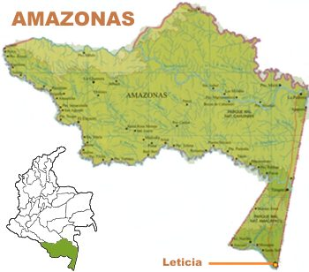

Amazonas

Zonas Turisticas
- Flora y fauna
Observación de animales y plantas únicas del Amazonas.
- Parques Nacionales de Colombia
Espacios como el Parque Amacayacu, hogar de comunidades indígenas y fauna.
- Turismo cultural
Visitas a comunidades indígenas que comparten su vida y tradiciones.
- Reserva Natural de Tambopata (Perú)
Conocida por su rica fauna, especialmente aves.
- Iquitos (Perú)
Ciudad clave para acceder a la Amazonía peruana y sus reservas naturales.
- Río Amazonas
Cruceros y expediciones para disfrutar de la fauna y naturaleza.
- Aventura
Actividades como senderismo, canotaje y ciclismo en la selva.
- Manaos (Brasil)
Punto de partida para explorar la selva amazónica.
- Parque Nacional de Jaú (Brasil)
Gran biodiversidad ideal para ecoturismo.
Comida Tipica
- Tacacá (Brasil)
Sopa con jugo de yuca, pato, camarones secos y hojas de jambú.
- Pirarucu (Brasil)
Pez de agua dulce preparado de diversas formas, como a la parrilla o ahumado.
- Moqueca de pescado (Brasil)
Guiso de pescado con tomate, pimientos, cocona, aceite de palma y cilantro.
- Juane (Perú)
Arroz, pollo o cerdo, huevo cocido y aceitunas envueltos en hojas de bijao.
- Ceviche amazónico (Perú)
Pescado de río con limón, ají, cebolla y hierbas amazónicas, a veces con frutas regionales.
Sector Economico
- Recursos naturales
Explotación de madera, minerales (como oro) y petróleo.
- Agricultura y ganadería
Cultivo de cacao, café, yuca, y ganadería.
- Pesca
Actividad importante con peces de río como piraíba y tambaquí.
- Turismo
El ecoturismo crece gracias a su biodiversidad y cultura.
- Artesanía
Producción de tejidos, cerámica y otros productos locales.
- Servicios
Comercio y servicios en ciudades como Manaos y Iquitos.